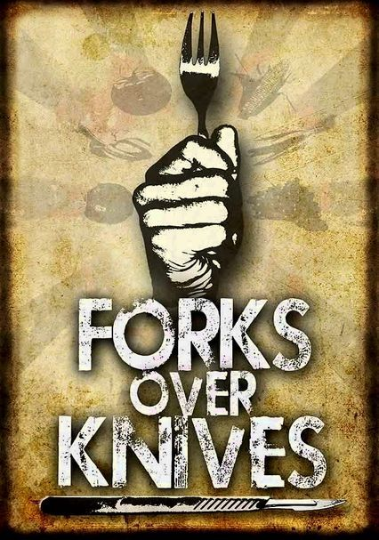
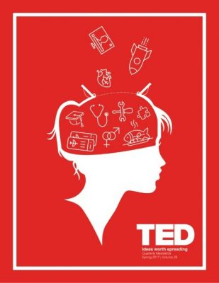

| No. | Name | Type | Information |
| 1 |  | Media | Forks Over Knives is a documentary that advocates a low-fat, whole-food, vegan diet as a way to avoid or reverse several chronic diseases. The film recommends avoiding refined and processed foods, including refined sugars, bleached flours, and oils, and instead eating whole grains, legumes, tubers, vegetables, and fruits. |
| 2 | Media | Game Changers is a documentary on Netflix which provides information about the health benefits of a plant based diet. The main idea is around a research conducted on the benfits of plant based diet, the current meat and dailr industry and regulations around these industries. | |
| 3 |
 |
Book | This book contains heart healthy recipes which boasts an advantange of the ability to reverse heart disease. |
| 4 |
 |
Book | This book contains whole food plant based vegan recipes that are easy to make. It also contains information about common plant based substitutes for animal products. |
| 5 | Book | This book a second edition of Engine 2 book which contains more plant based whole food recipes. These recipes lean towards exploring low-fat and low-sugar recipes. | |
| 6 |  | Ted Talk | This features an interesting Ted talk about the benefits of vegan diet and real life success stories. |
Additional questions?
Please reach out by filling this form below: